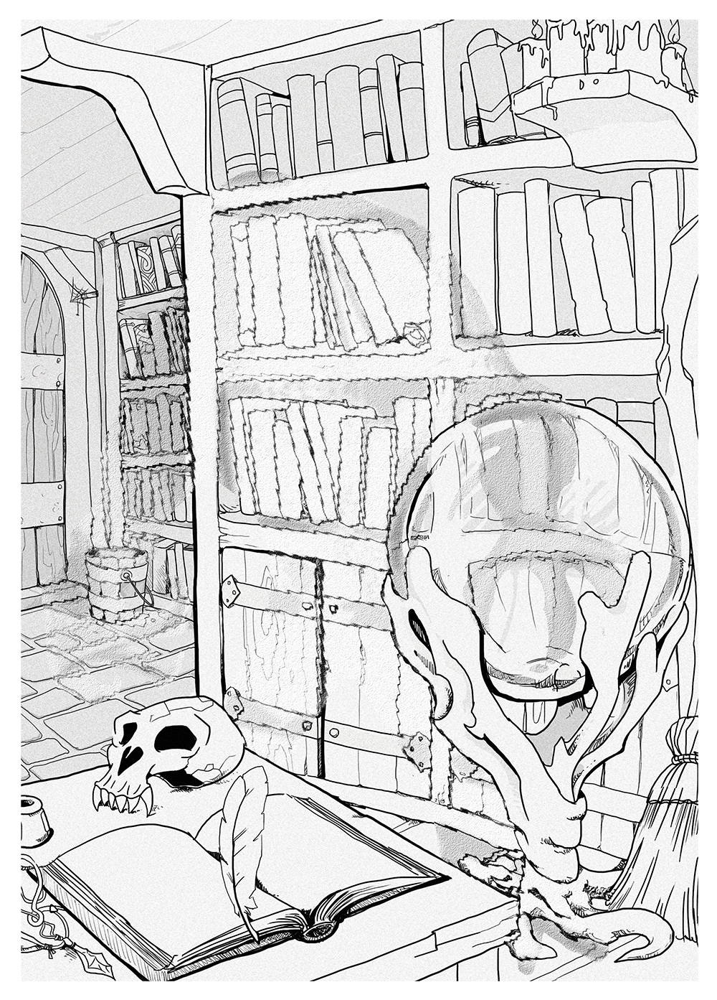

Complete Monster
by
Radaghast Kary
← Invisible Gorilla
↑Index↑
Iridescent Naga →

Illustration by Mariana Ruiz Villarreal,
Public Domain
Invisible Stalker
Members:
Advanced Invisible Stalker
5e
TN
D&D 5 facts
Size: Medium
Type:
Elemental
CR: 6
D&D 5 sources
Monster Manual
, p. 192
Xanathar’s Guide to Everything
, p. 111
D&D 5 links
Invisible Stalker in 5e d20 SRD
Invisible Stalker on AideD&D
3e
TN
D&D 3.0 facts
Abilities: Str 18, Dex 19, Con 14, Int 14, Wis 15, Cha 11
AC: 17 (-1 size, +4 Dex, +4 natural)
Advancement: 9-12 HD (Large); 13-24 HD (Huge)
Attacks: Slam +10/+5
CR: 7
Damage: Slam 2d6+6
HD: 8d8+16 (52)
Initiative: +8 (+4 Dex, +4 Improved Initiative)
Organization: Solitary
Qualities: Elemental, natural invisibility, improvedtracking
Reach: 5 ft. by 5 ft./10 ft.
Saves: Fort +4, Ref +10, Will +4
Size: Large
Skills: Listen +11, Move Silently +15, Search +11, Spot +13
Speed: 30 ft., fly 30 ft. (perfect)
Tag: Air
Terrain: Any land and underground
Treasure: None
Type:
Elemental
D&D 3.0 links
Invisible Stalker in 3.0 d20 SRD
D&D 3.5 facts
Type:
Elemental
Tags: Air, Extraplanar
Size: Large
CR: 7
D&D 3.5 sources
Monster Manual
, p. 160
D&D 3.5 links
Invisible Stalker in 3.5e d20 SRD
Pathfinder 2 facts
Family:
Air Elemental
Level: 7
Pathfinder 2 sources
Bestiary
Pathfinder 2 links
Invisible Stalker Monster in Pathfinder 2 SRD
d20 Modern facts
Size: Large
Type: Elemental (air)
CR: 7
HD: 8d8+16
HP: 52
Massive Damage Threshold: —
Initiative: +8
Speed: 30 ft., fly 30 ft. (perfect)
Defense: 17, touch 13, flat-footed 13 (-1 size, +4 Dex, +4 natural)
BAB: +6
Grapple: +14
Attack: +10 melee (1d8+6, slam)
Full Attack: +10/_+5 melee (1d8+6, slam), or +9 ranged
Fighting Space: 10 ft. by 10 ft.
Reach: 10 ft.
Special Qualities: elemental, natural invisibility, improved tracking, darkvision 60 ft.
Alignment: same as master
Saves: Fort +4, Ref +10, Will +4
Action Points: 0
Reputation: +0
Abilities: Str 18, Dex 19, Con 14, Int 14, Wis 15, Cha 11
d20 Modern sources
d20 Modern
d20 Modern links
Invisible Stalker on DM Reference
TN
Pathfinder facts
CR: 7
XP: 3,200
Size: Medium
Type:
Outsider
Tags: air, elemental, extraplanar
Initiative: +8
Senses: darkvision 60 ft.
AC: 20, touch 14, flat-footed 16 (+4 Dex, +6 natural)
HP: 80 (7d10+42)
Saves: Fort +11, Ref +11, Will +4
Speed: 30 ft., fly 30 (perfect)
Melee: 2 slams +12 (2d6+4)
Abilities: Str 18, Dex 19, Con 22, Int 14, Wis 15, Cha 11
Attacks: Base Atk +7; CMB +11; CMD25
Feats: Combat Reflexes, Improved Initiative, Lightning Reflexes, Weapon Focus (slam)
Skills: Acrobatics +14, Bluff +10, Fly +22, Knowledge (planes) +12, Perception +12, Sense Motive +12, Stealth +14, Survival +12
Languages: Auran, Common
Organization: solitary
Treasure: standard
Pathfinder sources
Bestiary
Pathfinder links
Invisible Stalker in Pathfinder 1 SRD
1e
BLUEHOLME sources
BLUEHOLME Journeymanne Rules
BLUEHOLME links
Invisible Stalker Dreamscape Design
0e
OD&D facts
AC: 3
Move: 12
HD: 8
Chance in Lair: Nil
Treasure: Nil
OD&D sources
Monsters & Treasure
, p. 4
N
S&W
facts
AC: [16]
Attacks: bite (4d4)
HD: 8
HDE: 9
Move: 4
Special: Invisible, flight
XP: 1100
S&W
sources
The Blue Book of Dangers and Dweomers
, p. 89
{kind=link}